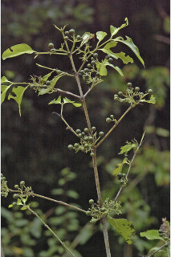
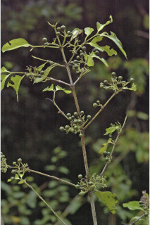

Trees up to 12 m tall.
12 ಮೀ. ಎತ್ತರದವರೆಗಿನ ಮರಗಳು.
Trees up to 12 m tall.
மரங்கள் 12 மீ. உயரம் வரை வளரக்கூடியது.
Bark grey, smooth, irregularly fissured and flaky when mature; blaze cream.
ತೊಗಟೆ ಬೂದು ಬಣ್ಣ ಹೊಂದಿದ್ದು ನಯವಾಗಿರುತ್ತದೆ,ಅನಿಯತ ಸೀಳಿಕಾ ಮಾದರಿಯಲ್ಲಿದ್ದು ಬಲಿತಾಗ ಚಕ್ಕೆ ರೂಪದಲ್ಲಿರುತ್ತದೆ.
Bark grey, smooth, irregularly fissured and flaky when mature; blaze cream.
மரத்தின் பட்டை சாம்பல் நிறமானது, வழுவழுப்பானது, முதிரும் போது ஒழுங்கற்ற பிளவுகளுடையது மற்றும் பெரிய செதில்களாக உதிருபவை; உள்பட்டை கீரிம் நிறமானது.
Young branchlets usually quadrangular, glabrous.
ಎಳೆಯ ಕಿರುಕೊಂಬೆಗಳು ಸಾಮಾನ್ಯವಾಗಿ 4- ಕೋನಗಳ ಸಮೇತವಿದ್ದು ರೋಮರಹಿತವಾಗಿರುತ್ತವೆ.
Young branchlets usually quadrangular, glabrous.
சிறிய நுனிக்கிளைகள் குறுக்குவெட்டுத் தோற்றத்தில் நான்கு கோணங்களுடையது, உரோமங்களற்றது.
Leaves simple, opposite, decussate; stipules interpetiolar linear with broad base, to 0.9 cm long; petiole 0.6-1 cm long, planoconvex in cross section, glabrous; lamina 6-15 x 2.5-7 cm, elliptic, apex acuminate, base cuneate, margin entire, coriaceous, shining above, glabrous beneath; midrib raised above; secondary_nerves 4-7 pairs, domatia present at axills; tertiary_nerves obscure.
ಎಲೆಗಳು ಸರಳವಾಗಿದ್ದು ಕತ್ತರಿಯಾಕಾರದ ಅಭಿಮುಖ ಜೋಡನಾ ವ್ಯವಸ್ಥೆಯಲ್ಲಿರುತ್ತವೆ; ಕಾವಿನೆಲೆಗಳು ತೊಟ್ಟುಗಳ ನಡುವೆ ಇದ್ದು ವಿಶಾಲವಾದ ಬುಡ ಭಾಗವುಳ್ಳ ರೇಖಾತ್ಮಕದ ಆಕಾರದಲ್ಲಿರುತ್ತವೆ; ತೊಟ್ಟು 0.6 – 1 ಸೆಂ.ಮೀ.ವರೆಗಿನ ಉದ್ದವಿದ್ದು,ಅಡ್ಡ ಸೀಳಿದಾಗ ಸಪಾಟ ಪೀನ ಮಧ್ಯದ ಆಕಾರದಲ್ಲಿರುತ್ತದೆ ಮತ್ತು ರೋಮರಹಿತವಾಗಿರುತ್ತದೆ; ಪತ್ರಗಳು 6 -15 X 2.5–7 ಸೆಂ.ಮೀ. ಗಾತ್ರ,ಅಂಡವೃತ್ತದ ಆಕಾರ ಹೊಂದಿದ್ದು, ಕ್ರಮೇಣ ಚೂಪಾಗುವ ತುದಿ, ಬೆಣೆಯಾಕಾರದ ಬುಡ, ನಯವಾದ ಅಂಚು, ತೊಗಲ್ಲನ್ನೋಲುವ ಮೇಲ್ಮೈ ಹೊಂದಿರುತ್ತವೆ, ಪತ್ರದ ಮೇಲ್ಭಾಗ ಹೊಳಪನ್ನು ಹೊಂದಿದ್ದು ತಳಭಾಗ ರೋಮರಹಿತವಾಗಿರುತ್ತವೆ;ಮಧ್ಯನಾಳ ಪತ್ರದ ಮೇಲ್ಭಾಗದಲ್ಲಿ ಉಬ್ಬಿರುತ್ತದೆ;ಎರಡನೇ ದರ್ಜೆಯ ನಾಳಗಳು 4-7 ಜೋಡಿಗಳಿದ್ದು ಅಕ್ಷಾಕಂಕುಳಿನಲ್ಲಿ ಸಹಜೀವಿ ಗೂಡುಗಳ ಸಮೇತವಿರುತ್ತವೆ; ಮೂರನೇ ದರ್ಜೆಯ ನಾಳಗಳು ಅಸ್ಪಷ್ಟ.
Leaves simple, opposite, decussate; stipules interpetiolar linear with broad base, to 0.9 cm long; petiole 0.6-1 cm long, planoconvex in cross section, glabrous; lamina 6-15 x 2.5-7 cm, elliptic, apex acuminate, base cuneate, margin entire, coriaceous, shining above, glabrous beneath; midrib raised above; secondary_nerves 4-7 pairs, domatia present at axills; tertiary_nerves obscure.
இலைகள் தனித்தவை, எதிரடுக்கமானவை, குறுக்குமறுக்கானவை; இலையடிச்செதில் இருஇலைக்காம்பிற்கு நடுவே (இண்டர்பீட்டியோலார்) உடையது, கோட்டு வடிவானது அகன்ற தளம் உடையது, 0.9 செ.மீ. நீளமானது; இலைக்காம்பு 0.6-1 செ.மீ. நீளமானது, குறுக்குவெட்டுத் தோற்றத்தில் பிளேனோகான்வக்ஸ், உரோமங்களற்றது; இலை அலகு 6-15 X 2.5-7 செ.மீ., நீள்வட்ட வடிவானது, அலகின் நுனி அதிக்கூரியது, அலகின் தளம் ஆப்பு வடிவானது, அலகின் விளிம்பு முழுமையானது, கோரியேசியஸ், அலகின் மேற்பரப்பு பளபளப்பானது, உரோமங்களற்றது; மையநரம்பு மேற்புறத்தில் அலகின் பரப்பைவிட உயர்ந்து இருக்கும்; இரண்டாம் நிலை நரம்புகள் 4-7 ஜோடிகள், டொமேசியா நரம்புகளின் கோணங்களில் உடையது; மூன்றாம் நிலை நரம்புகள் மற்றும் பிற நரம்புகள் கண்களுக்கு புலப்படாது.
Inflorescence axillary cymes.
ಪುಷ್ಪಮಂಜರಿಗಳು ಮಧ್ಯಾರಂಭಿ ಮಾದರಿಯವು.
Inflorescence axillary cymes.
மஞ்சரி சைம் வகை, இலைக்கோணங்களில் காணப்படுபவை.
Drupe ovoid; pedicel 1.5 cm long.
ಡ್ರೂಪ್ಗಳು ಅಂಡಾಕಾರದವು;ತೊಟ್ಟು 1.5 ಸೆಂ.ಮೀ. ಉದ್ದವಿರುತ್ತವೆ.
Drupe ovoid; pedicel 1.5 cm long.
உள்ளோட்டுத்தசைகனி (ட்ரூப்) முட்டை வடிவானது; மலர்காம்பு 1.5 செ.மீ. நீளமானது.


 
